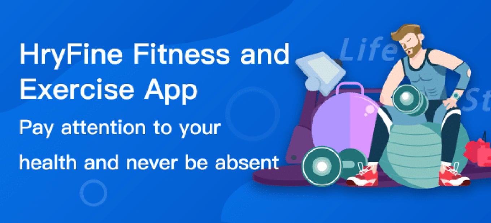
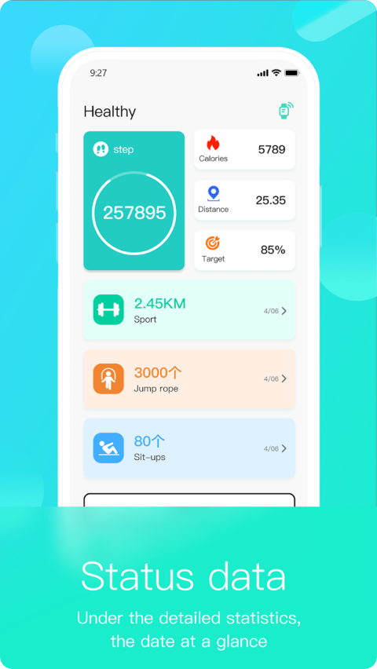

从 HryFine 看百元智能手表的设计哲学——为什么它能撑住 7 天续航
一百多块钱的 HryFine 手表能做通知推送、心率血氧、运动追踪，还能撑一周不充电。它是怎么在极低功耗下塞下这么多功能的？答案藏在蓝牙 BLE 架构、光学传感器取舍和电池保护机制里。
我一直在想一个问题：百元级的智能手表，到底是怎么活下来的？
随手拎起手腕上这块 HryFine——从官网的介绍来看，它能收微信消息、测心率血氧、记跑步数据、还能换表盘，电池却能撑 7 天。对比 Apple Watch 那种一天一充的主，这块表的续航长得有点反常识。更有意思的是，它的功能列表拉出来并不短：蓝牙通知推送、四类健康指标、四种运动模式、遥控拍照、表盘 DIY……光看规格表，你会觉得这块表的硬件怎么也得是个几百块的配置。
但它就是卖一百多——安装包从官方下载就能拿到。
答案藏在三个地方：蓝牙 BLE 的低功耗架构、光学传感器的取舍、以及电池保护机制的设计哲学。我翻了一下这款手表的hryfine文档和说明书，下面就试着把背后的原理拆给你看。
核心矛盾：功能要多，电要省
智能手表的本质是一个被塞进手腕的微型计算机，但它和手机有个根本不同——电池太小了。手机电池至少 3000mAh，智能手表能塞进 300mAh 就不错了，还要扛住持续的传感器采样、蓝牙连接、屏幕显示。HryFine 这块表的电池我没查到具体容量，但从续航反推，应该在 200~300mAh 之间。
在这个量级下，每一个功能都是电老虎。心率监测每秒要采几百次光学样本，蓝牙保持连接每小时消耗几毫安，屏幕亮一秒就吃掉待机状态好几分钟的电量。如果把这些功能全开、全时运行，可能撑不过两天。
所以 HryFine 的设计者面临的是一个经典的工程矛盾：用户要功能，电池不给力。解法不是砍掉功能，而是把"全时运行"变成"按需唤醒"。
拆解一：蓝牙 BLE 的"哨兵模式"
HryFine 用的是蓝牙 4.0 BLE（低功耗蓝牙），但文档里明确提到它和 BT3.0 型号有功能差异——BT3.0 才能拨号通话，BT4.0 只能收通知。这不是偷工减料，是 BLE 架构的核心设计取舍。
BLE 的工作模式可以理解成"哨兵站岗"：平时手表这边的蓝牙模块处于低功耗休眠状态，电流只有几微安；手机那边如果有消息要推，会先给手表发一个唤醒信号，手表的蓝牙模块"唰"地醒过来、接收数据、处理完再"唰"地睡回去。整个过程可能只有几百毫秒，但节省下来的电量是持续连接模式的几十倍。
这个架构在文档里有个很有意思的佐证——表盘推送是一次性的。表盘数据（图片 + 配置）通过蓝牙推到手表后，手表本地存储、切换表盘时根本不需要联网。也就是说，BLE 连接只在真正需要的时候才短暂活跃，平时就是"哨兵在岗，有事喊我"。

当然代价也很明显：BLE 带宽低、延迟高，而且因为是"唤醒-传输-休眠"的间歇性模式，实时性会打折扣。微信消息可能要晚个几百毫秒才到，拨号通话需要持续的音频流传输——这就是为什么 BT3.0 型号才能打电话，BT4.0 只能收文字通知。设计者在"能不能打电话"和"能不能撑一周"之间选了后者。
拆解二：光学传感器的"够用就好"
HryFine 的健康监测功能列表里写了心率、血压、血氧、睡眠四项，但说明书里有句话我每次看都觉得很扎心："非医疗设备，所有测量数据仅供参考"。
这不是免责声明，是硬件物理极限。
手表背面那个绿色（或红光）闪烁的东西叫 PPG 传感器（光电容积脉搏波），原理很简单：用 LED 往手腕皮下打光，然后用光感受器捕捉皮肤下面血管搏动时对光的吸收率变化，再用算法反推心率。但这个原理天生带缺陷：皮肤颜色、汗水、周围光线、甚至手腕上毛发的多少都会影响测量结果。HryFine 文档里提到的步数误差 ±5%~30%，其实是同一类问题——加速度传感器在手上拎东西、推婴儿车时采集到的加速度特征和正常走路太像，算法分不清。
但 PPG 传感器足够便宜、功耗足够低、体积足够小，能塞进一块百元手表里。相比之下，专业医疗级的心电电极、袖带式血压计，成本翻好几倍，体积也塞不下。所以设计者做了一个很实际的决策：把 PPG 传感器的精度调在"够用就行"的水平，用算法补偿一部分误差，剩下的误差靠用户接受"趋势参考"而非"精确诊断"来消化。
文档里的睡眠监测也是同样逻辑：手表根本没有办法直接监测你睡没睡着，它只是用加速度传感器检测手腕动不动、用心率传感器看心跳节奏，然后用一个训练好的模型把这些数据分成"深睡/浅睡/清醒"三段。模型是从大量真实睡眠数据上学来的，但每个人的睡眠习惯差异太大，分错的时候并不罕见。

拆解三：电池保护的"宁可充慢点，也别炸了"
HryFine 的充电故障排查文档里有个细节让我印象深刻——电池低于 3.6V 时，会有预充保护，需要等 3~5 分钟才显示充电状态。
这个设计背后是锂电池的基本物理特性：当电芯电压低于 3.6V 时，锂离子电池内部的化学反应会变得不稳定，直接大电流充电可能导致电芯发热、膨胀甚至起火。所以所有带电池保护电路的设备，在检测到电芯电压过低时，都会先以一个极小的电流（可能只有正常充电电流的 1/10）慢慢"激活"电芯，等电压回升到安全阈值（一般 3.6V 左右）后再切入正常充电。
HryFine 的预充保护就是这个逻辑的直接体现。文档里还特意提醒"不要中途拔掉再插"——因为预充过程中拔掉会让电芯又掉回低压区，下次还得从头来。这不是产品 bug，是电池保护电路在老老实实干活。
续航方面，文档给出了一个参考表：中档亮度 5~7 天、最低档 7~10 天、最高档 3~4 天。这个差异的核心驱动因素是屏幕亮度——OLED 屏（或 LCD 背光）在高亮度下的功耗可以是低亮度下的好几倍。手表在电池快耗尽时会自动降低亮度、停止心率监测、频繁断开蓝牙，也是同一套省电逻辑的一部分。
这套设计意味着什么
讲完原理，回到最初的问题：HryFine 为什么能在百元价位撑住 7 天续航？
总结下来就是三层设计的协同：BLE 架构从连接层面省电大项（持续连接 → 间歇唤醒）、光学传感器从精度层面接受妥协（精确医疗 → 趋势参考）、电池保护从安全层面保障寿命（宁可预充也不过充）。这三层加在一起，把一个可能只能撑两三天的方案硬生生拉长了一倍续航。
代价也很明确：它不能打电话（BLE 带宽不够）、测量数据不能当诊断依据（PPG 物理极限）、极端环境下可能充不上电（预充保护的副作用）。但对于绝大多数用户来说，这些代价是可接受的——买它的人要的就是"能收消息、能测个大概、一周充一次"，不是"能打电话、能当医疗设备、随便充都没问题"。
如果你的需求是"手腕上有个手机"，那 HryFine 肯定不是你的菜；但如果你只是想有个东西帮你记记步数、看看心率、收收消息，而且不想天天充电，这套"够用就好 + 按需唤醒 + 电池保护"的设计哲学，反而是百元价位下最务实的方案。哦对了，这套资料我在GitHub、Gitee和GitCode上都有备份，国内访问去 Gitee/GitCode 更顺畅。